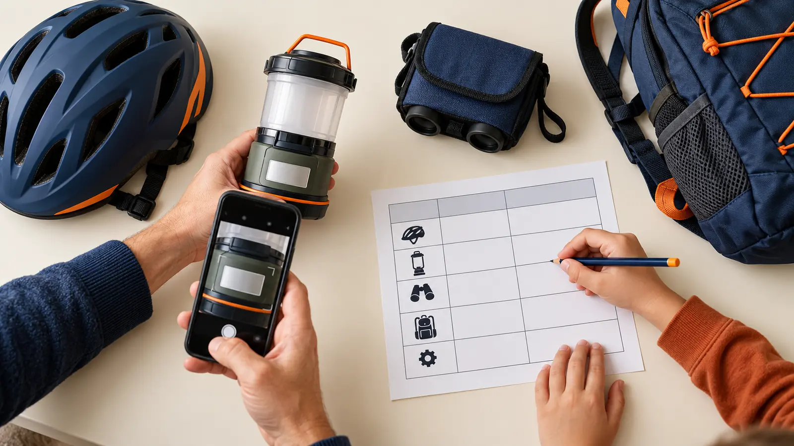

Item and category
Use a plain description: “camp lantern” or “bike helmet.” Color can help locate it, but color is not a model identifier.
AT HOME · PRODUCT RECORDS · EXPLORATION
When a recall or repair notice names a model, “the blue lantern in the garage” is not enough. Photograph five labels, record what each field actually says, store the file privately, and stop.

Pick five pieces of family adventure gear that have a manufacturer label: a lantern, bike helmet, portable inflator, battery pack or similar item. Photograph the full item, the model label and any serial or date code. Write what the label calls each field. Add the official manual or recall page. Then stop at five.
The point is not to inventory every sock. The point is to make the next safety notice, manual lookup or support call less vague. U.S. Consumer Product Safety Commission recall notices often identify affected products by brand, model, date code, serial range or label location. A clean record helps the adult compare the exact item with the exact notice; it does not make that comparison automatically.
Time: 25 minutes. Cost: $0 using a phone or camera, paper or a private digital note, and gear already owned. Age fit: school-age children can match category icons, read large printed labels and check whether an adult copied a field correctly. The adult controls devices, privacy, lifting, batteries and decisions.
Use a bright dry table. Do not ask a child to remove an electrical cover, open a battery compartment, climb storage, lift heavy equipment or handle leaking, swollen, hot, corroded or damaged items. Isolate a suspect item from use as its manufacturer and emergency guidance require; a recordkeeping activity is not a repair session.
A model usually groups a product design or version. A serial number may identify one unit. A lot or batch code can identify a manufacturing group. A date code or manufacture date can narrow when it was made. Actual labels vary, and some items use other identifiers. Copy the label’s words and punctuation instead of forcing every item into one template.
Do not infer a model from a shopping order title, marketplace listing or the color name. Product listings can combine versions. Packaging can be replaced. The label on the item, the exact manual and the manufacturer’s current support information are stronger starting points.
Search the CPSC recall database and the manufacturer’s official recall/support page using the maker and model. Compare product images, label location, model, serial or date ranges and remedy instructions. A similar name or color is not enough. If a notice might match, stop using the product when the notice says to stop, keep children away, and contact the manufacturer through the official route.
Never improvise a recall remedy, destroy an item, cut a cord, remove a label or ship a battery until the official notice or manufacturer gives those exact instructions for the exact item. CPSC says recall remedy information can change; re-open the current notice instead of trusting an old screenshot. Report an unsafe product through the official SaferProducts.gov route when appropriate.
A label log is not product registration. Some manufacturers provide registration to deliver safety or recall information; durable infant and toddler products have specific federal registration-card rules. Follow the exact manufacturer’s official process and privacy statement. Do not invent a registration need for every backpack or tool.
A serial photo also does not prove purchase date, ownership, warranty eligibility or condition. Keep receipts or warranty records only if the adult wants them and can store them securely. Read the actual terms. Do not promise children that a damaged item will be replaced because its number was recorded.
Use the least information needed. The gear record does not need the child’s name, school, face, schedule or trip dates. Turn off unnecessary location capture before photographing if that matches the household’s device practices, or remove location metadata using a trusted method the adult understands. Keep access limited to responsible adults.
Choose one primary private location and one backup the adult can recover. A paper copy can omit serial numbers and point to the private digital folder. Do not email the full log casually, place it in a public shared album or attach it to a social post asking whether an item is recalled.
Unreadable label: change light and camera angle; do not scrape, clean with chemicals or remove the label. Contact the manufacturer with a whole-item photo. Low energy: log one lantern and stop after five minutes. No phone: copy visible fields to paper and draw the label location; an adult can photograph later. Damaged item: stop the lesson, keep children away and follow official manufacturer, CPSC, battery or emergency guidance. No matching recall: record the date checked but do not label the item “safe forever.”
Skip this activity with preschoolers around small parts, exposed batteries or heavy gear. Skip any item that requires opening, climbing, power, fuel handling or disassembly to reach a label. Skip serial-number collection if the household has no private storage plan. Adults can still check one product directly against CPSC without building a larger file.
Reviewed October 29, 2026 using the U.S. Consumer Product Safety Commission’s current recall search and data notes, recall-data resources and product-registration FAQ. The five-field evidence card, 25-minute sequence and privacy boundaries are original editorial tools, not legal, insurance, warranty, cybersecurity or repair advice. No affiliate links are attached. Report corrections through About.
MAKE THE WEEK COUNT
Build the plan your family can finish well, then leave enough energy for the next part of the day.
More family plans